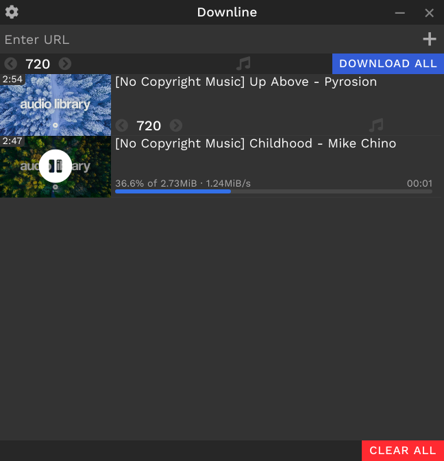

View Source
View Source
Downline
Free and open source software for downloading video and audio from YouTube, Vimeo, Dailymotion, SoundCloud and many other sites
Downline works on Windows and Linux

Features
- Works for links from several sites
- Choose audio and video quality (with support for 4K videos)
- Pause and resume downloads
- Download entire playlist and channel
- Download and embed subtitles
- Download multiple files simultaneously